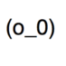

podhmo

from collections import defaultdict
def dt():
return defaultdict(dt)
D = dt()
D["x"]["y"]["z"] = "aaaaa"
D["x"]["y"]["z"] # => "aaaaa"
D["x"]["x"] # => defaultdict([function dt at 0x10b073398], {})
pythonを使って何か作るより、pythonで遊んでいることが多い気がします
「今日」という時刻に依存した処理。
「今日」を「2000/01/01」にとしてテストしたい
date.today()を「2000/01/01」を返すように置き換える。
渡されたデータを「印刷」する処理
実際には「印刷」せずに、確認したい
印刷処理を置き換える。渡された値を確認
ということで話を進めます
実行時に、好きな値を返すようにしたり(stub)
from datetime import datetime
def is_holiday():
return datetime.now().weekday() == 0
def visit_shop(name):
if is_holiday():
fmt = "{name} is close."
return fmt.format(name=name)
else:
fmt = "{name} is open."
return fmt.format(name=name)
target.py
import mock
import unittest
class Tests(unittest.TestCase):
def _callFUT(self, *args, **kwargs):
from target import visit_shop #2.x
return visit_shop(*args, **kwargs)
@mock.patch("target.is_holiday")
def test_it(self, m):
m.return_value = True
result = self._callFUT("Shop")
expected = "Shop is close."
self.assertEqual(result, expected)
tests.py実行後に、どのように使われたか確認したり(spy)
def enqueue_data(data):
# using external resource! (e.g. MQ)
message = "Enqueue Messaging Queue!"
raise Exception(data, message)
def notify_message(name):
# using external resource! (e.g. mail)
fmt = "{name} submitted!"
raise Exception(fmt.format(name=name))
def after_submit(data, name):
enqueue_data(data)
notify_message(name)
target.py
import mock
import unittest
class Tests(unittest.TestCase):
def _callFUT(self, *args, **kwargs):
from target import after_submit
return after_submit(*args, **kwargs)
@mock.patch("target.notify_message")
@mock.patch("target.enqueue_data")
def test_it(self, m0, m1):
data = mock.sentinel.Data
self._callFUT(data, "Foo")
m0.assert_called_once_with(data)
m1.assert_called_once_with("Foo")
tests.py
from mock import patch
from target import whattime_is_it, notify
def greeting(name):
hour = whattime_is_it()
if 0 <= hour <= 4:
fmt = "{name}, Goto Bed!!"
notify(fmt.format(name=name))
@patch("__main__.notify") #patch
@patch("__main__.whattime_is_it") #patch
def test(m0,m1):
m0.return_value = 1 #mimic(fake)
greeting("Foo")
m1.assert_called_with("Foo, Goto Bed!!") # captured
import mock
def complex_query(qs, name):
qs = qs.where(name=name).where(pemission_id=1)
return qs.where(deleted_at=None).as_list()
m = mock.Mock()
m.where.return_value.where.return_value.where.return_value.as_list.return_value = ["Foo"]
complex_query(m, "Foo") # => ["Foo"]
.アクセスを模倣したい。関数呼び出しを模倣したい。
>>> class A(object):
... pass
...
>>> a = A()
>>> a.__dict__
{}
>>> a.x = 'x'
>>> a.__dict__
{'x': 'x'}
>>> a.x
'x'
>>> def fn():
... return "function is object"
...
>>> fn()
'function is object'
>>> fn.__dict__
{}
>>> fn.x = "x"
>>> fn.x
'x'
>>>
いつでもオブジェクトにテキトウな属性を設定できる。
属性を設定できないオブジェクトもあります。何でしょう？
>>> class CallableObject(object):
... def __init__(self, v):
... self.return_value = v
... def __call__(self, *args, **kwargs):
... return self.return_value
...
>>> o = CallableObject("has __call__")
>>> callable(o)
True
>>> o.return_value
"has __call__"
>>> o()
"has __call__"
>>> def fn(*args,**kwargs):
... return "function is callable"
...
>>> fn("test")
'function is callable'
>>> callable(fn)
True
>>> hasattr(fn, "__call__")
True
>>> fn.__call__("test")
'function is callable'
実行したら、return_valueを返すオブジェクトを作れば良い
from collections import defaultdict
def dt():
return defaultdict(dt)
D = dt()
D["x"]["y"]["z"] = "aaaaa"
D["x"]["y"]["z"] # => "aaaaa"
D["x"]["x"] # => defaultdict([function dt at 0x10b073398], {})
pythonを使って何か作るより、pythonで遊んでいることが多い気がします
class MyMock(object):
def __init__(self, name='*'):
self.name = name
def __getattr__(self, k):
c = self.__class__(name=k)
setattr(self, k, c)
return c
def __call__(self, *args, **kw):
if hasattr(self, "return_value"):
return self.return_value
raise Exception("not callable")
from mymock import MyMock
def complex_query(qs, name):
qs = qs.where(name=name)
qs = qs.where(pemission_id=1)
qs = qs.where(deleted_at=None)
return qs.as_list()
m = MyMock()
expected = ["Foo"]
m.where.return_value.where.return_value.where.return_value.as_list.return_value = expected
complex_query(m, "Foo") # => ["Foo"]
class Target(object):
def f(self):
return "f"
class FakeTarget(object):
def __init__(self, spec_class=None):
self.spec_class = spec_class
def f(self):
return "g"
@property
def __class__(self):
return self.spec_class or type(self)
fake = FakeTarget()
fake.f() # => "g"
isinstance(fake, Target) # => False
isinstance(fake, FakeTarget) # => True
fake = FakeTarget(Target)
fake.f() # => "g"
isinstance(fake, Target) # => True
isinstance(fake, FakeTarget) # => True
模倣後も依然としてFakeTargetのインスタンスでもある理由はわかりますか？
import mock
with mock.patch("__builtin__.open") as m:
m.return_value.read.return_value = "data"
result = open("test.txt").read()
assert result == "data"
def now():
"属性が設定できないのはC拡張のtypeでした"
from datetime import datetime
return datetime.now()
with mock.patch("__main__.now") as m:
m.return_value = "now!"
result = now()
assert result == "now!"
now() # => 2013-09-08 11:30:15.572884
- 対象オブジェクト(foo.bar)を取得
- 対象オブジェクト(foo.bar)の属性(boo)にmockを挿入
対象オブジェクト?
属性名?
モジュール?関数？クラス？メソッド?
class bar(object):
def boo(self):
return "boo"
class bar(object):
class boo(object):
pass
class bar(object):
pass
bar.boo = classmethod(lambda c: c.__name__)
class bar(object):
@property
def boo(self):
return "boo"
def bar():
return "bar"
class Boo(object):
pass
bar.boo = Boo()
def boo():
return "boo"
fooモジュールから辿れれば何でも
def _dot_lookup(thing, comp, import_path):
try:
return getattr(thing, comp)
except AttributeError:
__import__(import_path)
return getattr(thing, comp)
def _importer(target):
components = target.split('.')
import_path = components.pop(0)
thing = __import__(import_path)
for comp in components:
import_path += ".%s" % comp
thing = _dot_lookup(thing,
comp, import_path)
return thing
mock.py
>>> import mako
>>> hasattr(mako,"lookup")
False
>>> import mako.lookup
>>> hasattr(mako,"lookup")
True
>>> mako.lookup
[module 'mako.lookup' from '~/venvs/pycon/lib/python2.7/site-packages/mako/lookup.pyc']
>>> mako.lookup.TemplateLookup
[class 'mako.lookup.TemplateLookup']
start(),stop()でmockの有効化,無効化できますが
import unittest
import mock
class Tests(unittest.TestCase):
def _callFUT(self, *args, **kwargs):
from target import fn
return fn(*args, **kwargs)
def test_it(self):
m = mock.patch("target.depndents.one")
m.return_value = 10
m.start() #mockを有効化
self._callFUT()
m.stop() #mockを無効化
テスト実行中にエラーが出たら、stop()呼ばれませんね
class Tests(unittest.TestCase):
def setUp(self):
self.p1 = patch("target.depends.one")
self.p1.start()
self.p2 = patch("target.depends.two")
self.p2.start()
def tearDown(self):
self.p1.stop()
self.p2.stop()
class Tests(unittest.TestCase):
def test_it(self):
p3 = patch("target.depends.three")
p3.start()
self._callFUT() # raise Exception ?
p3.stop()
class Tests(unittest.TestCase):
def setUp(self):
# ..snip
do_something() # raise Exception ?
from __future__ import print_function
import unittest
import mock
class Tests(unittest.TestCase):
def setUp(self):
self.addCleanup(lambda : print("cleanup"))
self.addCleanup(mock.stopall)
do_something() #raise Exception?
def tearDown(self):
print("teardown")
def test_it(self):
do_something2() #raise Exception?
この辺りのことはドキュメントにも書いてあったりします26.4.3.5. patch methods: start and stop
class _patch(object):
_active_patches = set()
def start(self):
"""Activate a patch, returning any created mock."""
result = self.__enter__()
self._active_patches.add(self)
return result
def stop(self):
"""Stop an active patch."""
self._active_patches.discard(self)
return self.__exit__()
def _patch_stopall():
"""Stop all active patches."""
for patch in list(_patch._active_patches):
patch.stop()
def patch(...):
pass
patch.stopall = _patch_stopall
mock.py
# 使い終わった後の後処理を忘れない!!
rf = open("anything.txt")
do_something(rf)
# raise Exception?
rf.close() #忘れずに!!
# as context manager
with open("anything.txt") as rf:
do_something(rf)
# raise Exception?
# as function decorator
def with_open(filename):
def _with_open(use):
with open(filename) as rf:
use(rf)
return _with_open
@with_open("anything.txt")
def use_rf(rf):
return do_something(rf)
import mock
from contextlib import nested
with nested(
mock.patch("foo.bar.boo"),
mock.patch("foo.bar.booo"),
mock.patch("foo.bar.boooo"),
mock.patch("foo.bar.booooo")) as (m0, m1, m2, m3):
do_something()
import mock
from contextlib import ExitStack
with ExitStack() as st:
m0 = st.enter_context(mock.patch("foo.bar.boo"))
m1 = st.enter_context(mock.patch("foo.bar.booo"))
m2 = st.enter_context(mock.patch("foo.bar.boooo"))
m3 = st.enter_context(mock.patch("foo.bar.booooo"))
do_something()
import mock
with mock.patch("__builtin__.open") as m:
m.return_value.read.return_value = "data"
result = open("test.txt").read()
assert result == "data"
def now():
"属性が設定できないのはC拡張のtypeでした"
from datetime import datetime
return datetime.now()
with mock.patch("__main__.now") as m:
m.return_value = "now!"
result = now()
assert result == "now!"
now() # => 2013-09-08 11:30:15.572884
class Temporary(object):
def __init__(self):
self.patching = set()
def patch(self, name, val):
_name = "_"+name
orig = getattr(self, name)
setattr(self, _name, orig)
setattr(self, name, val)
self.patching.add(name)
def release(self):
for name in self.patching:
_name = "_"+name
orig = getattr(self, _name)
setattr(self, name, orig)
delattr(self, _name)
self.patching = set()
from release import Temporary
from mymock import MyMock
tmp = Temporary()
tmp.x = 10
tmp.x # => 10
tmp.patch("x", MyMock())
tmp.x # => [mymock.MyMock object at 0x10c74a510]
#>>> tmp.__dict__
#{'patching': set(['x']), '_x': 10, 'x': [mymock.MyMock object at 0x10c74a510]}
tmp.release()
tmp.x # => 10
#>>> tmp.__dict__
#{'x': 20, 'patching': set()}
context managerなら中で例外が発生した場合にもしっかり__exit__してくれますね
from importer import _importer
from mymock import MyMock
class Patch(object):
def __init__(self, target, new, attr):
self.target, self.attr = target, attr
self.new = new
def __enter__(self):
self._orig = getattr(self.target, self.attr)
new = self.new(name=self.attr)
setattr(self.target, self.attr, new)
return new
def __exit__(self, type, val, tb):
setattr(self.target, self.attr, self._orig)
del self._orig
def patch(namespace, new=MyMock):
target, attr = namespace.rsplit(".", 1)
return Patch(_importer(target), new, attr)
from patch import patch
with patch("__builtin__.open") as m:
m.return_value.read.return_value = "data"
result = open("test.txt").read()
assert result == "data"
def now():
"属性が設定できないのはC拡張のtypeでした"
from datetime import datetime
return datetime.now()
try:
with patch("__main__.now") as m:
m.return_value = "now!"
result = now()
assert result == "now!"
raise Exception
except:
pass
now() # => 2013-09-08 11:30:15.572884
実際の所、mockはself._tmp_originalに退避させてます
import random as r
def get_random():
return r.random()
myrandom.py
from myrandom import get_random
import myrandom
def use_random1():
return get_random() + get_random()
def use_random2():
x = myrandom.get_random()
y = myrandom.get_random()
return x + y
target.py
import mock
def _getTargetModule():
import target
return target
# use random_1
with mock.patch("target.get_random") as m:
m.return_value = 1
target = _getTargetModule()
result = target.use_random1()
assert result == 2
# use random_2
with mock.patch("target.get_random") as m:
m.return_value = 1
target = _getTargetModule()
result = target.use_random2()
"""AssertionError: 1.054692676442476 != 2"""
assert result == 2
import mock
m = mock.Mock()
m("I'm sleepy..", where="office?")
# ok.
m.assert_called_with("I'm sleepy..", where="office?")
# failure.
try:
m.assert_called_with("good night", where="bed")
except AssertionError as e:
assert "Actual call: mock(\"I'm sleepy..\", where='office?')" in str(e)
else:
raise Exception
m1 = mock.Mock()
m1(1)(2).f(3).g(4)
m1.assert_called_with(1)
m1(1).assert_called_with(2)
m1(1)(2).f.assert_called_with(3)
class MyMock(object):
def __init__(self, name='*'):
self.name, self.call_args = name, None
def __getattr__(self, k):
c = self.__class__(name=k)
setattr(self, k, c)
return c
def __call__(self, *args, **kw):
if hasattr(self, "return_value"):
self.call_args = (args, kw)
return self.return_value
raise Exception("not callable")
def assert_called_with(self, *args, **kw):
vls = self.call_args
if vls is None:
raise AssertionError("not called")
if vls != (args, kw):
raise AssertionError(vls)
from mymock import MyMock
m = MyMock()
m("I'm sleepy..", where="office?")
# ok.
called_with = m.assert_called_with
called_with("I'm sleepy..", where="office?")
# failure.
try:
called_with("good night", where="bed")
except AssertionError as e:
print "it's not real"
else:
raise Exception
m1 = MyMock()
m1(1)(2).f(3).g(4)
m1.assert_called_with(1)
m1(1).assert_called_with(2)
m1(1)(2).f.assert_called_with(3)
from mock import patch
from target import whattime_is_it, notify
def greeting(name):
hour = whattime_is_it()
if 0 <= hour <= 4:
fmt = "{name}, Goto Bed!!"
notify(fmt.format(name=name))
@patch("__main__.notify") #patch
@patch("__main__.whattime_is_it") #patch
def test(m0,m1):
m0.return_value = 1 #mimic(fake)
greeting("Foo")
m1.assert_called_with("Foo, Goto Bed!!") # captured
mock.py
from patch import patch
from target import whattime_is_it, notify
def greeting(name):
hour = whattime_is_it()
if 0 <= hour <= 4:
fmt = "{name}, Goto Bed!!"
notify(fmt.format(name=name))
# hmm.. not decorator
with patch("__main__.whattime_is_it") as m0:
m0.return_value = 1
with patch("__main__.notify") as m1:
greeting("Foo")
m1.assert_called_with("Foo, Goto Bed!!")
use_mymock.py意外とコアの部分はシンプル.
まとめたコードはhttps://gist.github.com/podhmo/6497807にあります
欲しい機能は結構あります
def notify(obj, message):
raise Exception
def notify_object(val):
obj = Value(val)
notify(obj, object())
class Value(object):
def __init__(self, val):
self.val = val
class Matcher(object):
def __init__(self, o):
self.o = o
def __eq__(self, o):
for k in ["__class__", "val"]:
if getattr(self.o, k) != getattr(o, k):
return False
return True
matcher.py
import mock
import unittest
from matcher import Matcher
from matcher import notify_object, Value
class Tests(unittest.TestCase):
@mock.patch("matcher.notify")
def test_check_with_eq(self, m):
v = mock.sentinel.value
notify_object(v)
with self.assertRaises(AssertionError):
m.assert_called_with(Value(v),
mock.ANY)
@mock.patch("matcher.notify")
def test_check_with_equal(self, m):
v = mock.sentinel.value
notify_object(v)
m.assert_called_with(Matcher(Value(v)),
mock.ANY)
26.5. unittest.mock — getting started — Python v3.4.0a2 documentation
import mock
with mock.patch("foo.bar.boo") as m:
m.return_value = "mocked"
do_something()
@mock.patch("foo.bar.boo")
def use_decorator(m):
m.return_value = "mocked"
do_something()
# don't use
p = mock.patch("foo.bar.boo")
m = p.start()
m.return_value = "mocked"
do_something()
p.end()
import mock
mock.patch.TEST_PREFIX = "use_"
@mock.patch("foo.bar.Boo.__iter__")
class Tests(object):
def use__class_decorator(self, m):
m.return_value = iter([1, 2])
do_something()
def use__class_decorator2(self, m):
m.return_value = iter([True])
do_something()
import mock
from collections import Counter
#mock.patch.object
with mock.patch.object(Counter, "__getitem__") as m:
m.return_value = mock.sentinel.cnt
c = Counter()
c[0] = 10000000000000000
assert c[0] == mock.sentinel.cnt
#mock.patch.dict
D = {"key": "value"}
with mock.patch.dict(D, k="v"):
assert D["k"] == "v"
assert D.get("k", None) is None
m = mock.Mock()
m.boo.return_value = "boo!"
with mock.patch.dict("sys.modules", foo=m):
import foo
assert foo.boo() == "boo!"
import mock
m = mock.Mock()
m.foo.return_value = 10
assert m.foo(10) == 10 #指定した値しか返せない
assert m.foo(10) == 10
def even_true(v):
return [True, False][v % 2]
m.bar.side_effect = odd_true #side_effectで関数を登録すると
assert m.bar(10) is True #呼び出した際に、登録した関数が使われる
assert m.bar(9) is False
import mock
import unittest
class Tests(unittest.TestCase):
def test_side_effect_exception(self): # call input() raise RunTimeError
m = mock.Mock()
m.side_effect = RuntimeError("uggg")
with self.assertRaises(RuntimeError):
input("input string")
def test_attribute_error(self): # access .foo raise AttributeError
m = mock.Mock()
m.foo.bar.boo
with self.assertRaises(AttributeError):
del m.foo
m.foo
import mock
import unittest
class Tests(unittest.TestCase):
def test_property_access_exception(self):
"""obj.foo => we must raise RuntimeError!"""
m = mock.Mock()
type(m).foo = mock.PropertyMock(side_effect=RuntimeError("hmm"))
with self.assertRaisesRegexp(RuntimeError, "hmm"):
m.foo
def test_this_is_Important(self):
self.assertNotEqual(mock.Mock(), mock.Mock())
self.assertNotEqual(type(mock.Mock()), type(mock.Mock()))
# ordinary, type(object()) == type(object()) is True
中でちょっと気の効いた事してますが。単純です。
プロパティがディスクリプタでできる事が知っていればなるほどと思うでしょう。
import mock
import random
original = random.random
with mock.patch.object(random, "random") as m:
m.side_effect = lambda : original > 0.5
assert random.random() in [True, False]
assert random.random() in [True, False]
m = mock.Mock()
with mock.patch.dict("sys.modules", random=m):
m.random.side_effect = [10, 20]
import random
assert random.random() == 10
assert random.random() == 20
class Model(object):
def __init__(self, value):
self.value = value
self.actions = []
def save(self):
raise Exception
def create_model(value):
model = Model(value)
model.actions.append("create")
model.save()
#return model がない
target.py
from target import Model, create_model
import mock
from mock import patch
# 通常のpatchだと、selfに触れない。
with patch.object(Model, "save") as m:
m.side_effect = lambda self: None
create_model(mock.sentinel.value)
"TypeError: [lambda]() takes exactly 1 argument (0 given)"
with patch.object(Model, "save", autospec=True) as m:
def assertion_when_save(self):
assert self.value == mock.sentinel.value
assert self.actions == ["create"]
m.side_effect = assertion_when_save
create_model(mock.sentinel.value)
import mock
def write_message(message, name="foo.txt"):
with open(name, "a") as wf:
wf.write(message)
with mock.patch("__builtin__.open") as m:
io = mock.mock_open()
m.side_effect = io
write_message("foo")
io.assert_called_once_with("foo.txt", "a")
mwrite = io.return_value.write
mwrite.assert_called_once_with("foo")
write_io_mock.py
def load_data_from_file(name):
with open(name) as rf:
send_data(rf.read())
def send(data):
raise Exception
with mock.patch("__builtin__.open") as m0:
io = mock.mock_open(read_data="*data*")
m0.side_effect = io
with mock.patch("__main__.send") as m1:
load_data_from_file("foo.txt")
io.assert_called_once_with("foo.txt")
m1.assert_called_once_with("*data*")
read_io_mock.py
def file_copy(src, dst):
with open(src) as rf:
with open(dst, "w") as wf:
wf.write(rf.read())
with mock.patch("__builtin__.open") as m:
load = mock.mock_open(read_data="*content of file**")
save = mock.mock_open()
m.side_effect = [load(), save()]
file_copy("input.txt", "output.txt")
assert load.return_value.read() == "*content of file**"
save.return_value.write.assert_called_once_with("*content of file**")
def file_copy(src, dst):
with open(src) as rf:
with open(dst, "w") as wf:
wf.write(rf.read())
with mock.patch("__builtin__.open") as m:
load = mock.mock_open(read_data="*content of file**")
save = mock.mock_open()
buf = [load, save]
def dummy_open(name, flag="r"):
return save(name, flag) if flag == "w" else load(name, flag)
m.side_effect = dummy_open
file_copy("input.txt", "output.txt")
load.assert_called_once_with("input.txt", "r")
save.assert_called_once_with("output.txt", "w")
assert load.return_value.read() == "*content of file**"
save.return_value.write.assert_called_once_with("*content of file**")
def file_copy(src, dst):
with open(src) as rf:
with open(dst, "w") as wf:
wf.write(rf.read())
@contextlib.contextmanager
def temporary_file():
import tempfile
import os
_, filename = tempfile.mkstemp()
yield filename
os.remove(filename)
target.py
from target import temporary_file
from target import file_copy
with temporary_file() as writename:
with temporary_file() as readname:
with open(readname, "w") as wf :
wf.write("*content of file**")
file_copy(readname,writename)
with open(writename) as rf:
assert rf.read() == "*content of file**"
tests.py実際にファイル作って調べても良いじゃないですかね？
そもそも、テスト対象と依存オブジェクトを何で分離したかったんですかね？
安心して眠れるように
発生するエラーを事前に検知するための方法の１つ 実際には種類も階層構造も色々ありますが
mockはテスト対象と依存オブジェクトを分離する
テスト対象と依存オブジェクトのミスマッチを解消できない
class Book(object):
def __init__(self, content):
self.content = content
def pp(self):
return self.content #do_something()
class Event(object):
def __init__(self):
self.events = []
def publish(self, v):
self.events.append(("publish", v))
def publish_pp(event):
book = Book("user.get_book()")
event.publish(book.pp())
target.py
import unittest
import mock
class Tests(unittest.TestCase):
def _callFUT(self, *args, **kwargs):
from target import publish_pp
return publish_pp(*args, **kwargs)
@mock.patch("target.Book")
def test_it(self, m):
m.return_value.pp.return_value = "mock"
from target import Event
ev = Event()
self._callFUT(ev)
expected = ("publish", "mock")
self.assertEquals(ev.events[0], expected)
m.return_value.pp.assert_called_with()
tests.py
class Book(object):
def __init__(self, content):
self.content = content
def normalize(self): #dont provide pp
return self.content #do_something()
class Event(object):
def __init__(self):
self.events = []
def publish(self, v):
self.events.append(("publish", v))
def publish_pp(event): #expected pp
book = Book("user.get_book()")
event.publish(book.pp())
target.py
import unittest
import mock
class Tests(unittest.TestCase):
def _callFUT(self, *args, **kwargs):
from target import publish_pp
return publish_pp(*args, **kwargs)
@mock.patch("target.Book")
def test_it(self, m): #expected pp
m.return_value.pp.return_value = "mock"
from target import Event
ev = Event()
self._callFUT(ev)
expected = ("publish", "mock")
self.assertEquals(ev.events[0], expected)
m.return_value.pp.assert_called_with()
tests.pyBook.ppをBook.normalizeに変更。テスト対象は以前のまま
テスト対象とテストコードの意図が揃えばテストは成功してしまう
(実はpatch("target.Book")ではなくpatch("target.Book.pp"),patch.object(Book,"pp")ならばエラー)
class Book(object):
def __init__(self, content):
self.content = content
def pp(self):
return self.content #do_something()
class Event(object):
def __init__(self):
self.events = []
def publish(self, v):
self.events.append(("publish", v))
def publish_pp(event):
book = Book("user.get_book()")
event.publish(book.pp())
target.py
import unittest
from mock import patch
class Tests(unittest.TestCase):
def _callFUT(self, *args, **kwargs):
from target import publish_pp
return publish_pp(*args, **kwargs)
def test_it(self): #expected pp
from target import Book
with patch("target.Book",spec=Book) as m:
m.return_value.pp.return_value = "mk"
from target import Event
ev = Event()
self._callFUT(ev)
expected = ("publish", "mock")
self.assertEquals(ev.events[0], expected)
m.return_value.pp.assert_called_with()
tests.pyspecは作られるMockが利用できる属性を制限してくれます
作られるMockが利用できる属性を制限する
import mock
m = mock.Mock(spec=["foo"])
assert "foo" in m._mock_methods
assert not "fbar" in m._mock_methods
m.foo
# m.bar #AttributeError
from target import Book
mBook = mock.Mock(spec=Book)
mBook.normalize
# mBook.pp
target.py実装上は、_mock_methodsに属性名が無いか調べている
class Book(object):
def __init__(self, content):
self.content = content
def pp(self):
return self.content #do_something()
class Event(object):
def __init__(self):
self.events = []
def publish(self, v):
self.events.append(("publish", v))
def publish_pp(event):
book = Book("user.get_book()")
event.publish(book.pp())
target.py
import unittest
import mock
class Tests(unittest.TestCase):
def _callFUT(self, *args, **kwargs):
from target import publish_pp
return publish_pp(*args, **kwargs)
@mock.patch("target.Book",autospec=True)
def test_it(self, m): #expected pp
m.return_value.pp.return_value = "mock"
from target import Event
ev = Event()
self._callFUT(ev)
expected = ("publish", "mock")
self.assertEquals(ev.events[0], expected)
m.return_value.pp.assert_called_with()
tests.pyautospecはパッチ対象のsignatureを自動で設定します
mockの引数を実際の引数に合わせる
import mock
import inspect
def foo(x, y=10):
return (x, y)
inspect.getargspec(foo)
# => ArgSpec(args=['x', 'y'], varargs=None, keywords=None, defaults=(10,))
with mock.patch("__main__.foo") as m:
m.return_value = "nospec"
m() # => "nospec"
with mock.patch("__main__.foo", autospec=True) as m:
m.return_value = "hasspec"
m()
# TypeError: [lambda]() takes at least 1 argument (0 given)
target.py実装は、「eval("lambda %s: None" % signature)」
リファクタリングでメソッドをプロパティに変更した
import mock
class Foo(object):
def foo(self):
return "foo"
# test
with mock.patch("__main__.Foo",
autospec=True) as m:
m.return_value.foo.return_value = 10
assert Foo().foo() == 10
# real application
assert Foo().foo() == "foo"
method_to_method.py
import mock
class Boo(object):
@property
def boo(self):
return "boo"
# test
with mock.patch("__main__.Boo",
autospec=True) as m:
m.return_value.boo.return_value = 10
assert Boo().boo() == 10 #false positive
# real application
assert Boo().boo() # TypeError
method_to_property.py
import mock
class Foo(object):
def __init__(self, x, y):
self.x = x
self.y = y
with mock.patch("__main__.Foo",
autospec=True) as m:
try:
Foo(10, 20).x
except AttributeError:
"AttributeError: no attribute 'x'"
else:
raise Exception
import mock
class Foo(object):
def __init__(self, x, y):
self.x = x
self.y = y
class FooForTest(Foo):
x = mock.DEFAULT
y = mock.DEFAULT
with mock.patch("__main__.Foo",
autospec=FooForTest) as m:
assert Foo(10, 20).x == mock.DEFAULT
__init__()が呼ばれて初めてインスタンス変数が束縛される
- autospecの強化
- 袋小路
- abc.ABCMeta
- metaclassの合成..
- Interface的なアノテーション
- 悪くはない。
考えていること
何と何を置き換えたか把握できるのが、mock(stub)の利点
hai